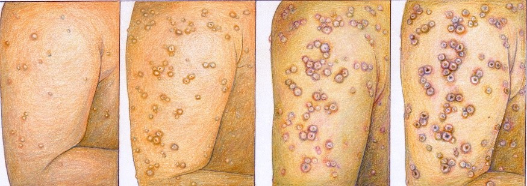

Varíola

A varíola é uma doença infectocontagiosa provocada pelo vírus Orthopoxvirus variolae, da família Poxiviridae. Ela foi erradicada mundialmente por volta dos anos 1970 após uma campanha de imunização global sem precedentes organizada pela Organização Mundial da Saúde (OMS).
Esse vírus foi descoberto quando cientistas notaram que uma múmia, que viveu de meados de 1550 a 1307 a.C., apresentava vestígios do mesmo. Essa descoberta dá a entender que a varíola, que é uma doença muitas vezes mortal, atinge os seres humanos há milhares de anos.
Causas
A varíola é causada por infecção com o vírus da varíola, o Orthopoxvírus variolae. Ele pode ser transmitido:
- Diretamente de pessoa para pessoa. A transmissão direta do vírus requer contato direto prolongado. O vírus pode ser transmitido pelo ar por meio de gotículas que escapam quando uma pessoa infectada tosse, espirra ou fala.
- Via itens contaminados. A varíola também pode se espalhar por meio do contato com roupas e lençóis coIndiretamente de uma pessoa infectada. Em casos raros, o vírus pode se espalhar mais longe pelo ar, possivelmente por meio do sistema de ventilação em um edifício, infectando pessoas em outros quartos ou em outros andares.ntaminados, embora o risco de infecção a partir destas fontes seja menos comum.
Sintomas de Varíola
Os primeiros sintomas da varíola costumavam aparecer de 12 a 14 dias após a infecção pelo vírus. Durante o período de incubação, que dura de sete a 17 dias, a pessoa não manifesta nenhum sintoma e também não é capaz de passar a doença para ninguém.
Após o período de incubação, no entanto, alguns sinais e sintomas característicos da gripe começam a surgir, como:
- Febre
- Desconforto geral
- Dor de cabeça
- Fadiga severa
- Dores nas costas
- Vômitos
Poucos dias depois, manchas vermelhas começam a aparecer no rosto, nas mãos, nos antebraços e, posteriormente, no tronco também. Dentro de um ou dois dias, muitas dessas lesões passam a ser pequenas bolhas cheias de líquido claro, que depois se transforma em pus. Crostas começam a se formar oito a nove dias depois disso e, eventualmente, podem cair, deixando profundas cicatrizes sem caroço.
As lesões também se desenvolvem nas membranas mucosas do nariz e boca e rapidamente se transformar em feridas que quebram aberto.